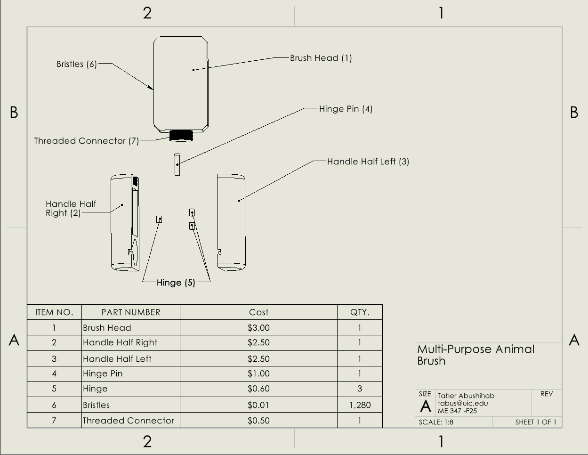

Product design case study
Multi-Purpose Pet Brush
A modular grooming tool designed in SolidWorks with an interchangeable brush head, hinged storage handle, patterned bristle array, exploded drawing, and bill of materials.

Overview
Design objective
The goal was to combine grooming and storage into one compact product. The design uses a removable threaded brush head, a two-piece handle with a hinge, internal space for small grooming accessories, and a dense patterned bristle array.
Design architecture
Modular assembly
- Interchangeable brush head connected with a threaded interface.
- Two-piece hinged handle that opens to create internal storage.
- Patterned nylon bristles for full grooming-surface coverage.
- Recycled PET concept for the brush head and handle body.
- Stainless-steel hinge components for repeated use.

CAD work
Modeling and assembly
I created the individual components and constrained the full assembly using standard and advanced mates. I checked interfaces and clearances so the brush head could attach securely and the handle halves could open and close without interference.
Iterations
Design improvements
- Replaced an earlier press-fit concept with a threaded connector for easier cleaning and head replacement.
- Adjusted alignment and tolerances between the handle halves to reduce gaps and improve hinge fit.
- Simplified internal geometry to support molding and assembly.
- Refined bristle density and arrangement for more realistic manufacturability and surface coverage.
Manufacturing considerations
Materials and production
The main body was conceived in recycled PET, with nylon bristles and stainless-steel hinge hardware. The geometry was developed with injection molding or 3D printing in mind, while the BOM helped identify cost drivers and document the assembly.
| Component | Material / concept | Manufacturing consideration |
|---|---|---|
| Brush head & handle | Recycled PET | Injection molding or 3D printing |
| Bristles | Flexible nylon | Patterned mass-produced features |
| Hinge hardware | Stainless steel | Durability under repeated opening |
| Threaded connector | Molded insert concept | Replaceable head and secure fit |
Future work
How I would validate it
- 3D print a functional prototype and test the hinge and threaded interface.
- Perform tolerance analysis on the handle closure and connector.
- Test grip comfort, bristle stiffness, and storage usability with users.
- Revise the BOM with supplier quotes and production-volume assumptions.